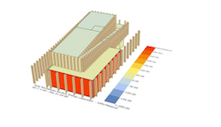
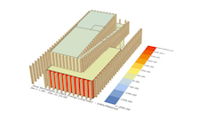
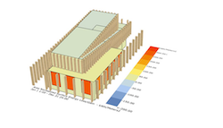

Proces
Ontwerpproces:
I. Initiatie fase II. Schets ontwerp fase III. Voorlopig ontwerpfase
IV. Definitief ontwerpfase V. Technisch ontwerpfase
VI. Realisatie fase VII. Beheerfase
Schets ontwerp is iets

☑ Initiatie project
☑ Schets ontwerp
☑ Voorlopig ontwerp
Variant 2
 ☑ Initiatie project
☑ Schets ontwerp
☑ Voorlopig ontwerp
Variant 3
 ☑ Initiatie project
☑ Schets ontwerp
☑ Voorlopig ontwerp
Variant 4
 ☑ Initiatie project
☑ Schets ontwerp
☑ Voorlopig ontwerp